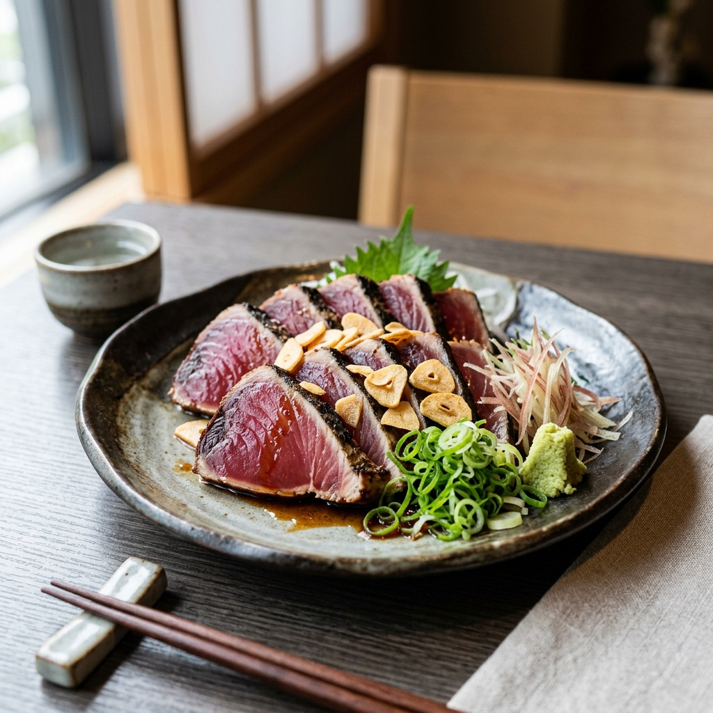
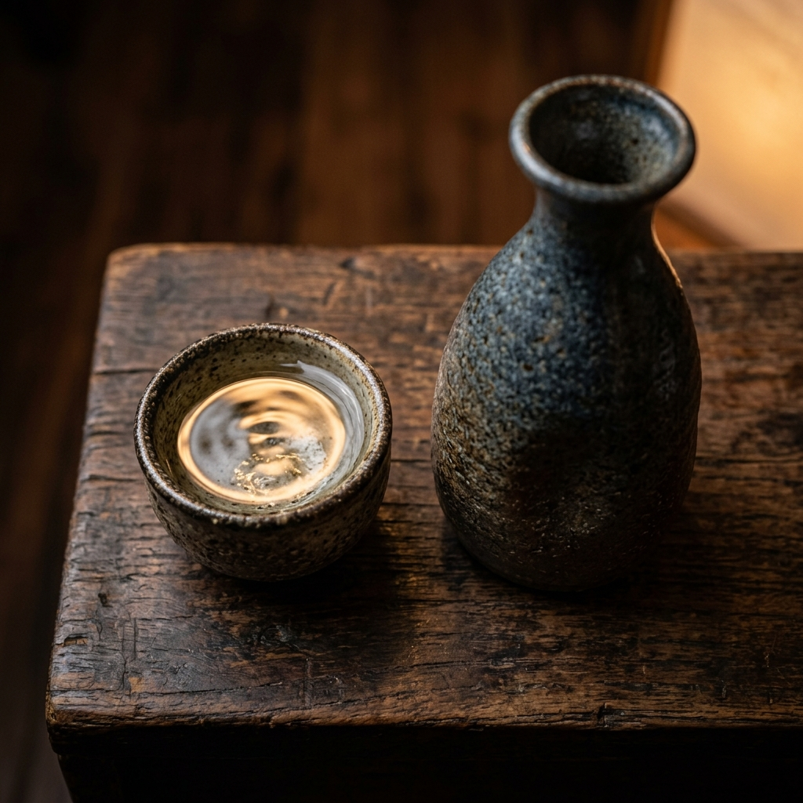
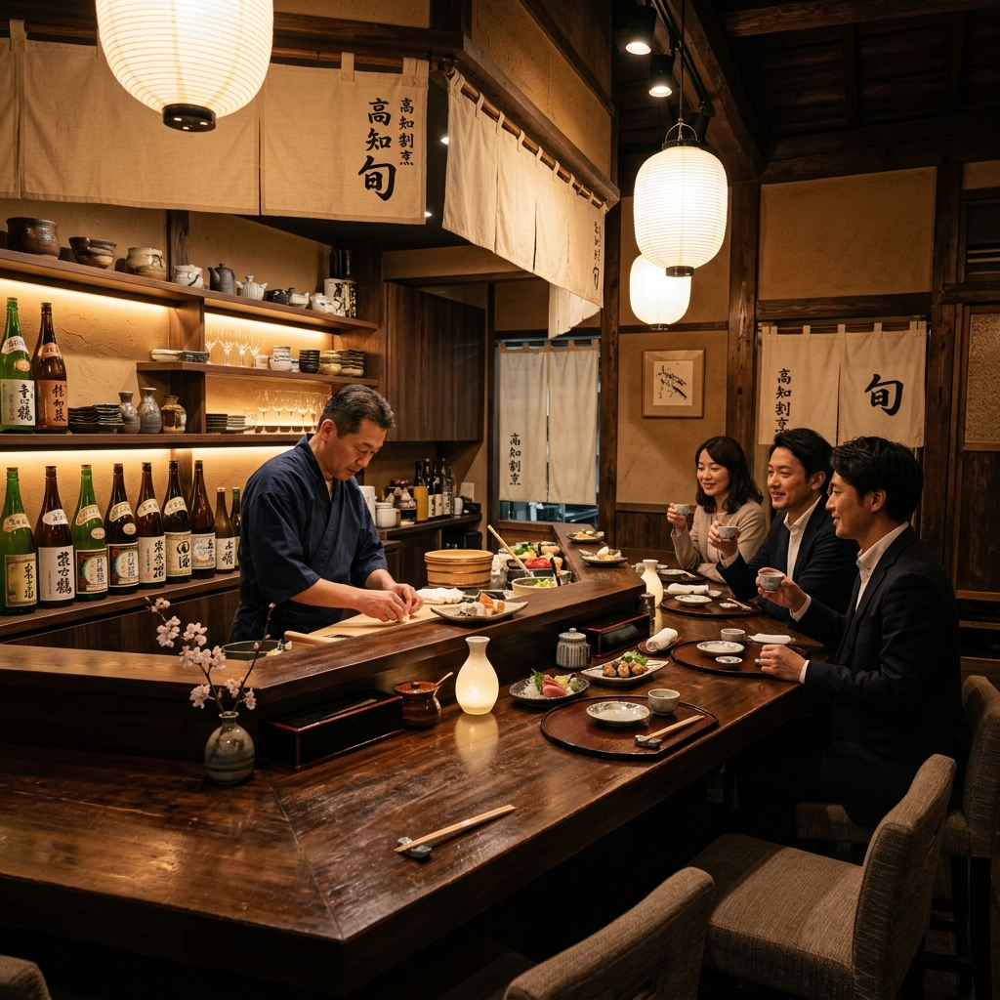
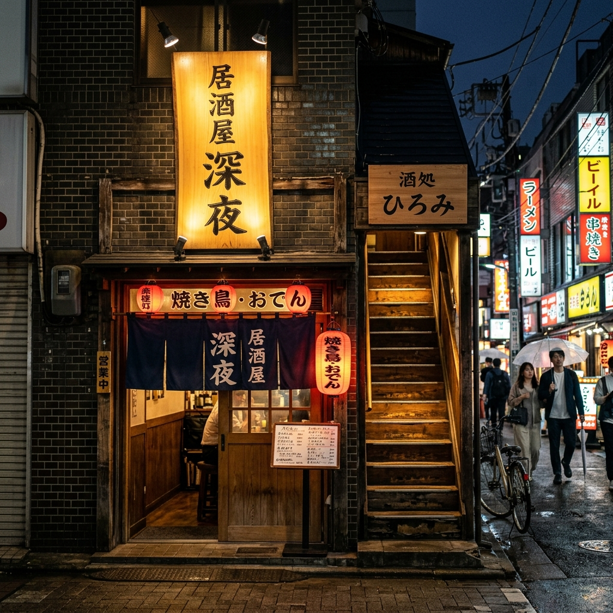

看板料理

鰹のタタキ 仏手柑酢仕立て
時価新鮮な鰹を高温の藁火で一気に炙り、外は香ばしく、中は艶やかなレアに仕上げます。大将特製の「仏手柑（ぶしゅかん）酢」のタレと、薄切りにしたにんにくや薬味をたっぷりと添えてお召し上がりください。
土佐の豊かな海と山が育んだ旬の恵み。 店主自ら包丁を握り、一品一品に想いを込めた手料理をお届けします。 喧騒を離れた大人のための隠れ家で、五感を満たす静かな時間をお過ごしください。
ご予約・お問い合わせ高知の定番である「鰹のタタキ」。こ橋では、一般的なポン酢や塩とは一線を画す、独自の味わいを追求しました。 調味に使用するのは、大将の家で大切に育てられた柑橘「仏手柑（ぶしゅかん）」の搾り果汁。
仏手柑は、その名の通り仏様の手のような形をした独特な柑橘で、爽快でいて尖りのない、気品ある酸味が特徴です。 豪快に藁で炙り、旨味を閉じ込めた鰹に、この仏手柑酢をベースにした特製タレを纏わせることで、鰹本来の濃厚な脂の甘みと清涼な香りが調和した、当店だけの極上のタタキが完成します。
仕込みから調理、盛り付けに至るまで店主一人が丁寧に行うため、混雑時にはお時間をいただくこともございますが、その分、一口ごとに感動していただける料理を提供いたします。

高知の酒は、すっきりとした喉越しとキレが際立つ「淡麗辛口」が特徴です。こ橋では、地元・高知の銘酒の中から、当店の丁寧な味付けの手料理や鰹の脂を最も引き立てる日本酒を大将が厳選して取り揃えています。


| 店名 | 手料理 こ橋（こばし） |
|---|---|
| 住所 |
〒780-0843 高知県高知市廿代町1-3 クリエイトビル2F ※蓮池町通駅（とさでん）から徒歩1分、高知駅から徒歩約10分 |
| 電話番号 |
088-873-1084 ※少人数での営業のため、事前のご予約をおすすめいたします。 |
| 営業時間 | 17:00 〜 23:00（L.O. 22:30） |
| 定休日 | 日曜日（連休の場合は変更となる場合がございます） |
| 席数 | 全 18席（カウンター8席、テーブル席、半個室あり） |
高知県高知市廿代町1-3
クリエイトビル 2階